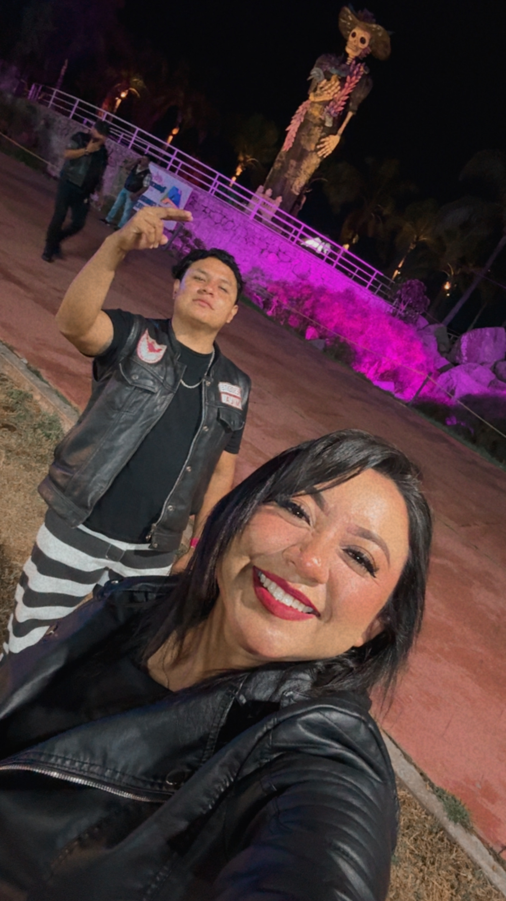

y decidí guardarlas aquí para ti. ❤️
NUESTRA HISTORIA
Todo comenzó con una solicitud de amistad en Facebook. Esa misma semana comenzamos a platicar todos los días. Habíamos quedado en salir el viernes de la siguiente semana, pero al final decidimos que… ¿para qué esperar? Así que salimos ese mismo viernes. Fuimos a cenar alitas y terminamos teniendo una de esas pláticas que no quieres que se acaben. Entre chisme y chisme, descubrimos que conocíamos a una misma persona. 😂 Ese día nos reímos muchísimo. Sinceramente, yo pensé que probablemente terminaríamos siendo amigos. Por nuestra diferencia de edad, creí que quizá no querrías algo serio conmigo. Pero aun así, seguimos saliendo. Y no poquito… llegamos a vernos hasta tres veces por semana. Hasta que un día nos besamos. Y creo que fue justo ahí cuando me di cuenta de algo que ya no podía negar: me estaba enamorando de ti. ❤️ No sé si tú sentiste lo mismo en ese momento. Eso todavía lo desconozco. Pero yo sí sé lo que sentí… y desde aquel beso, ya había algo en ti que había cambiado por completo mi manera de verte. ❤️
Volver a los casos ❤️NUESTRA CANCIÓN 🎵
AIRE — Intocable Una canción, un pequeño detalle. ❤️ Puedes escucharla aquí mismo:
10 COSAS QUE AMO DE TI
1. Que te preocupas por mí y siempre tratas de resolver cuando tengo un problema. 2. Que eres muy gracioso y me haces reír. 3. Me gustan mucho tus ojos y tus labios. 4. Cuando me das un beso o me acaricias me pones nerviosa, pero me haces sentir muy feliz y generas un sentimiento muy bonito. 5. Que todas las mañanas me envías un mensaje de buenos días. 6. Me gusta que trates de llevarme a todos lados contigo. 7. Me gusta cuando vemos películas en mi casa porque me dejas hacerte cariños. 8. Me gusta dormir contigo, abrazados. 9. Me gusta cuando eres cariñoso conmigo, me abrazas y me das besos. ❤️ 10. Me encanta la forma en que, aunque no siempre digas lo que sientes, encuentras otras maneras de demostrarme cuánto me quieres. ❤️
Volver a los casos ❤️SENTIDO DE AMOR
En estos meses me he dado cuenta que ya no quiero seguir buscando el amor, porque para mí ya lo encontré contigo. Pero aún sí quiero que tú también estés conmigo por eso. Por amor y no porque solo te sientes bien al estar conmigo. A veces creo que tal vez estás conmigo por agradecimiento por haber estado en un momento complicado en tu vida. Pero en ocasiones pienso que no. Que de verdad estás conmigo porque me quieres. Es difícil para mí comprender tu forma de amar, siento que a veces tengo que forzar las cosas para que de verdad muestres lo que sientes. Ya no quisiera hacerlo porque no está bien. Solo quiero que seas tú. Pero que también entiendas que yo necesito que me demuestres tu amor con detalles (que no sea solo por fechas importantes, simplemente porque te nace hacerlo) y muestras de cariño cuando estamos juntos. Yo espero que se pueda hacer algo sobre eso porque el plan que tengo contigo no es uno que lleve meses, mi plan contigo conlleva a estar juntos para siempre (esperando que tú también lo quieras). Quiero viajar, conocer, disfrutar, probar diferentes comidas, tener una familia, tener una casa, un carro, más motos y sobre todo tener hijos, todo esto lo quiero contigo. Sé que soy difícil. Y tal vez ya te aburrí con mis cosas. Pero créeme que te quiero en mi vida o mejor dicho quiero una vida contigo. Pero si no se puede al menos el tiempo que estemos juntos de mi parte tendrás una mujer que te ame y te apoye de manera incondicional. Gracias por compartir estos casi 4 meses juntos.
Te amo, Corazón de Melón. ❤️